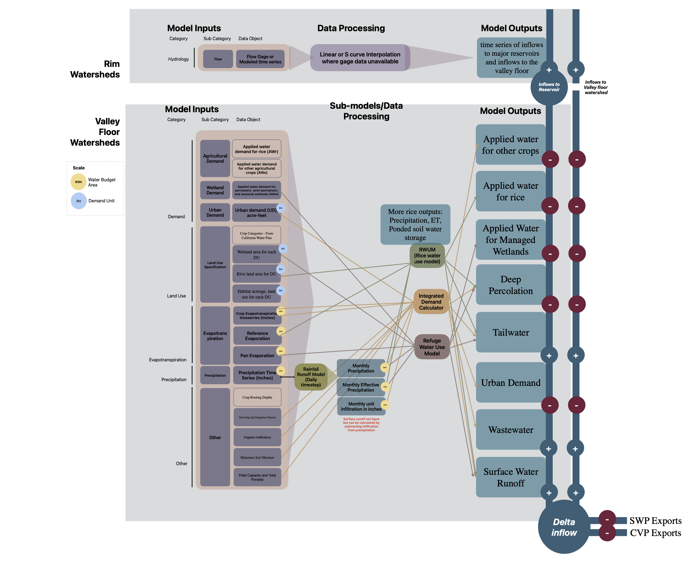

calsim_template.RmdCalSim is a water resources planning model, developed by the California Department of Water Resources (DWR) and the Mid-Pacific Region of the U.S. Bureau of Reclamation (Reclamation), to simulate operations of the State Water Project (SWP) and the Central Valley Project (CVP). CalSim 3 is the newest version of the model so this document will focus on the CalSim 3 version but will highlight differences between CalSim 3 and the prior modeling version CalSim-II (released in 2022).
California Simulation (CalSim) is a water resources planning model of the Central Valley Project (CVP) and State Water Project (SWP) operations.
CalSim simulates the operations of the State Water Project (SWP) and the Central Valley Project (CVP), along with much of the water resources infrastructure in the Central Valley of California and the Sacramento-San Joaquin Delta region. It models various aspects of water management, including:
Additionally, CalSim simulates the interactions between these components and their impacts on water availability, reliability, and overall system performance.
The following sections describe key model components. The diagram below is a simplified version of CalSim data inputs and how they contribute to the mass balance of the watersheds.Water Resource Integrated Modeling System (WRIM)

The Water Resource Integrated Modeling System (WRIM) provides the modeling framework and software for CalSim. WRIMS is a versatile water resources modeling system designed to assess operational alternatives in large and intricate river basins. It incorporates a simulation language for flexible specification of operational criteria, a linear programming solver for making efficient water allocation decisions, and graphics capabilities (WRIM).
| Name | Utility |
|---|---|
| DWR’s “COMP” model | COMP was developed to perform arithmetic calculations on time series data, contains txt files used for rim hydrology unimpaired runoff. |
| Consumptive Use model | Determines land-use-based water use at a historical and existing (or future) level of development. |
| Depletion Analysis model | Determines the effects of existing (or future) land use and associated water use on historical flows. |
| Rainfall-Runoff Model | Used within CalSimHydro to produce runoff based on precipitation data, computes monthly infiltration, uses SCS method |
| Integrated Demand Calculator | ISoil moisture and demand calculator (IDC) that estimates surface runoff, deep percolation, and water demands for natural vegetation cover and various crops other than rice. Compute field scale agricultural applied water demands |
| Rice Water Use Model | Rice Water Use Model to compute the water demands, deep percolation, irrigation return flow, and runoff from precipitation for the rice fields. Compute field scale agricultural applied water demands |
| Wetland Water Use Model | Refuge Water Use Model that simulates the ponding operations for managed wetlands, and |
| Evapotranspiration spreadsheet model | NA |
CalSimHydro is the CalSim 3.0 Hydrology Preprocessor. CalSimHydro consists of the following components described in CalSimHydro Tool - A Web-based interactive tool for the CalSim 3.0 Hydrology Prepropessor:
Watersheds in CalSim are categorized as either Rim or Valley Floor watersheds.
CalSim 3 uses defined Water Budget Areas (WBA), that have been developed to help define the enhanced spatial resolution of CalSim 3. WBAs are used to:
Additionally, the refined spatial scale is organized around demand units are formulated so that water users within a demand unit have similar water rights, water contracts, source(s) of water, soils, land use, and general water delivery and irrigation efficiencies. Demand units are the smallest computational unit and are generated based on the following data sources:
CalSim is developed in the form of a node-arc network where nodes represent specific locations and arcs represent flow between nodes, here is a full schematic diagram of the system.
The following Node types are included:
Arcs represent averge monthly flows to, from or between nodes. Flow direction indicated by arrow. A few different types of arcs are includes:
Hydroloic Modeling assumptions:
There are multiple components of accessibility being evaluated:
Documentation: The CalSim 3 main report documentation is 776 pages though well-organized. The documentation provides the following sections and 3 appendix
License: WRIMS 2 is copyrighted by the State of California Department of Water Resources. It is licensed under the Eclipse Public License, Version 1.0. See Eclipse Public License for more details. However, WRIMS 2 includes a commercial solver named XA which requires a license.
Download Links:
Running the Model
In progress: Evaluating how accessible running the model is.
There is no standard update schedule for CalSim; rather, model updates follow updates in regulations. The following summarizes the updates that have been made:
Updates of CalSim 3 aim to enhance the accuracy, comprehensiveness, and usability of CalSim 3 for water resources management in California, addressing various aspects of hydrology, water demand, groundwater-surface water interactions, and model transparency. CalSim 3 objectives described in main report.
Spatial Resolution and Representation:
Updated Hydrology Modeling:
Groundwater-Surface Water Interaction:
Standardization and Documentation:
Simulation Period and Software Enhancements:
| Scenario Name | CalSim Version | Year Released | Description |
|---|---|---|---|
| 2008 2009 BiOp | CalSim II | ||
| 2008 2009 BiOp | CalSim II | ||
| 2019 BiOp 2020 ITP | CalSim II | ||
| Delivery Capability Report and Studies 2015 | CalSim II | 2015 | Link to report and results? avaliable here.. |
| Delivery Capability Report and Studies 2017 | CalSim II | 2017 | Link to report and results? avaliable here. |
| Delivery Capability Report and Studies 2019 | CalSim II | 2019 | Link to report and results? avaliable here. |
Data Inputs to CalSim 3 were summarized based on Chapters 4, 5, and 6 of the main report. Inputs described in the main report are summarized in the table below:
| Category | SubCategory | SubModel | Data Used | Data Produced | Use | Timestep Data Produced | Source |
|---|---|---|---|---|---|---|---|
| Hydrology | Unimpaired Runoff | Rim Watershed | Modeled or empirical flow data | Unimpaired runoff timeserries for each above dam watershed/streamflows | Produce time serries of unimpaired runoff to use for rim watershed hydrology | ? | USGS, DWR, USACE, Reclamation, txt files from DWR’s “COMP” model |
| Hydrology | Unimpaired Runoff | Rim Watershed | Average Annual Precipitation | Unimpaired runoff timeserries for each above dam watershed/streamflows for ungaged watersheds | Average annual precipitation for CalSim 3 rim watersheds is used to estimate streamflows for ungauged watersheds. | ? | National Climate Data Center (NCDC), which provides daily precipitation records for 32 gauges located within the Central Valley. Parameter-Elevation Regressions on Independent Slopes Model (PRISM) Climate Group at Oregon State University, which provides distributed grids of daily, monthly, and average annual precipitation depths. |
| Hydrology | Surface Runoff | Valley Floor Watershed, Rainfall-Runoff Model(CalSim Hydro) | Precipitation daily timeserries, Soil type, Hydrologic Condition, Land UseAntecedent Moisture Condition | Surface runoff timeserries by demand unit | Used to calculate Surface runoff (SR) from precipitation in the Rainfall-Runoff Model which is then used as an input to the Valley Floor Watershed submodel. Daily precipitation data for CalSim 3 valley watersheds are needed to calculate surface runoff, infiltration and soil moisture storage, and deep percolation. The SCS method is used to divide rainfall into surface runoff and | ||
| associated “losses” (infiltration and ET). | Aggregated to Monthly | Precipitation: National Climate Data Center (NCDC), which provides daily precipitation records for 32 gauges located within the Central Valley. Parameter-Elevation Regressions on Independent Slopes Model (PRISM) Climate Group at Oregon State University, which provides distributed grids of daily, monthly, and average annual precipitation depths.Soil Type: data available from the State Soil Geographic Database (STATSGO). This data wasdigitized at the scale of 1:250,000 for use in CalSim 3. The State Soil Geographic STATSGO data base spatial and tabular data were revised and updated in 2006 and renamedHydrologic Condition: No source providedLand Use: See row on Land use | |||||
| Antecedent Moisture Condition: NEH-4 (SCS, 1972) uses the antecedent 5-day precipitation as an antecedent precipitation index (see precipition input above for more informaiton). | |||||||
| Demand | Agricultural Demand | Valley Floor Watershed, Rice Water Use Model, Integrated Demand Calculator | Agricultural Water Demand | time series of applied water demands, agricultural return flows (tailwater), surface runoff from precipitation and deep percolation. AWr, AWo, and AWw are maintained as separate time series data. Tailwater from the 3 land classes are combined by demand unit. Surface runoff (from precipitation) and deep percolation (from precipitation and applied water) from the 3 land classes are aggregated by WBA. | Applied water demand for rice (AWr) and Applied water demand for other agricultural crops (AWo) are used to estimate diversions for agriculture in the Valley Floor Watershed Submodel. Rice specific demand is preprocessed in a Rice Water Use Model before being used in CalSim 3. Applied water demand for other agricultural crops is preprocessed in the Integrated Demand Calculator | ? | Water district and water agency boundaries and service areas obtained from the Cal-Atlas Geospatial Clearinghouse (formerly the California Spatial Information Library), which comprises separate GIS layers for Federal, State, and private water districts. These data are also available from DWR (2022a). CalSim 3 Main Report 3-4 – August 2022 • County LAFCO reports on water purveyors in their respective counties (LAFCO, 2022).0F 1 • County land-use surveys undertaken by DWR’s Division of Regional Assistance (formerly Division of Planning and Local Assistance) (DWR, 2022b). • County and regional integrated water resources plans and integrated water management plans. • CalSim II documentation (Reclamation, 2007). • Reclamation CVP water supply contract renewal and supporting environmental documents (Reclamation, 2022). |
| Demand | Wetland Demand | Valley Floor Watershed, Wetland Water Use Model (CalSim Hydro) | Wetland Water Demand | time series of applied water demands, agricultural return flows (tailwater), surface runoff from precipitation and deep percolation. AWr, AWo, and AWw are maintained as separate time series data. Tailwater from the 3 land classes are combined by demand unit. Surface runoff (from precipitation) and deep percolation (from precipitation and applied water) from the 3 land classes are aggregated by WBA. | Applied water demand for permanent, semi-permanent, and seasonal wetlands (AWw) is preprocessed in a Wetland Water Use Model and then utalized in the Valley Floor Watershed component of CalSim 2 to water use for wetlands. | ? | Report on Refuge Water Supply Investigations, Central Valley Hydrologic Basin, California (Reclamation, 1989a) • San Joaquin Basin Action Plan/Kesterson Mitigation Plan (Reclamation, 1989b) • Central Valley Joint Venture Implementation Plan (USFWS, 2006) • Refuge water management plans (Reclamation, 2022a) • Refuge water supply environmental documentation (Reclamation, 2022b) • Reclamation water supply contract documents with Grassland WD, CDFW, USFWS, and MOUs with USFWS (Reclamation, 2022c) |
| Demand | Urban Demand | Valley Floor Watershed, Integrated Demand Calculator | Urban Water Demand | Simulated surface water diversionsfor urban water suppliers | Urban demand (UD), combining indoor and outdoor components is utalized in the Valley Floor Watershed component of CalSim 2 to water use for urban areas. | NA | Urban Water Management Plans (UWMP) • Integrated Regional Water Management Plans (IRWMP) • Drinking Water Source Assessments • U.S. Environmental Protection Agency (EPA) • California Water Plan, Update 2018 |
Rim watersheds - modeled using unimpaired runoff, utilize gage data directly where available to create a preprocessed time series of unimpaired runoff. This time series utilizes the following data sources:
These data sources are not described in depth and no links to the sources are provided in the CalSim 3 main report.
When there are gaps in gage data or there is no available gage data for a rim watershed, a synthetic timeseries was developed using a linear interpolation approach (when there is some gage data, but only for a limited timeseries) or a S-Curve Method (Percent Deviation Method) to scale flow based on a similar watershed (when there is no gage data available from any time period). See section 5-14 for additional information on methods for producing synthetic timeseries.
To see the method used for each rim watershed and the specific gage utilized, refer to table Table 5-1: Data Sources and Calculation Methods, Sacramento River Hydrologic Region or Table 5-5: Data Sources and Calculation Methods, San Joaquin River Hydraulic Region in the main report
CalSim simulates both Surface Water and Groundwater dynamics for Valley Floor Watersheds. Inputs are preprocessed in a series of models that are ran prior to CalSim 3 including:
The following timeseries data are used directly in the above models:
No links to the sources are provided in the CalSim 3 main report.
Precipitation
Evaporation and Evapotranspiration (?)
Demand is represented through catchment objects divided into: agricultural, urban, wetland refuge
Agricultural Water Demand Data Sources
Urban Water Demand Data Sources
Wetland Water Demand Data Sources
Contracts and Water Rights
Watershed boundaries were developed using CalWater 2.2.1 and the USGS 12-digit Hydrologic Unit Code (HUC) watersheds.
Click here to download the full model network schematic.
Valley Wide Analysis - pros, good coverage of the system, can model how different operations would cause different flow at a relatively fine scale. cons, monthly time scale is limited for use in biological modeling, monthly timestep does not capture the fine scale resolution that biological organisms experience.